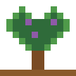
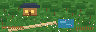
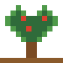
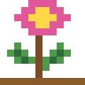
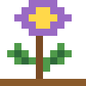

Little Roots
Little Roots
สมุนไพรไทย
Thai Herbs
สมุนไพรไทยที่ใช้ในครัวเรือนและตำรายาแผนไทย
สำรวจเลย →

สมุนไพรไทยที่ใช้ในครัวเรือนและตำรายาแผนไทย
สำรวจเลย →
ผัก ผลไม้ และเครื่องปรุงในอาหารไทย
สำรวจเลย →พืชที่เป็นรายได้ของเกษตรกรและวัตถุดิบอุตสาหกรรม
สำรวจเลย →
ไม้ดอกไม้ประดับและไม้มงคลของไทย
สำรวจเลย →
พืชหายากและพืชถิ่นเดียวที่พบเฉพาะในไทย (กำลังตรวจสอบรายชื่อ)
สำรวจเลย →


Hevea brasiliensis
ต้นไม้ที่ให้น้ำยางสำหรับทำผลิตภัณฑ์ยางหลากชนิด
อ่านข้อมูล
สถานะโครงการ: ตอนนี้มีหน้าข้อมูลครบถ้วน 8 ชนิดจาก 80 ชนิด ดูสถานะทั้งหมดที่ รายการพืชทั้งหมด และวิธีใช้ที่ คู่มือ